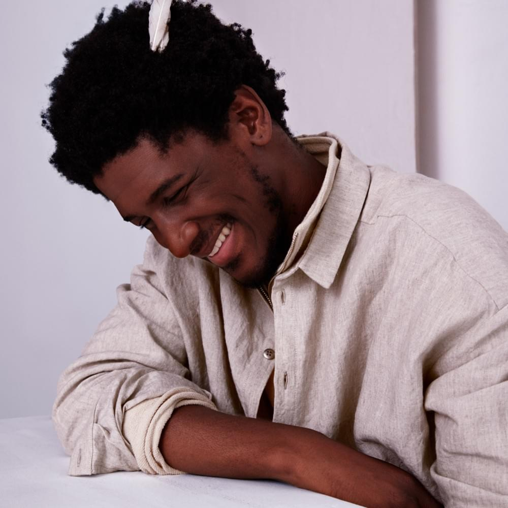

ASUS
Personal information:
Greta Thunberg
Sesamstraat 101, 10001 New York
+32 475 81 42 68
random@gmail.com
Hobbies:
- Golf
Ik ben vanaf mijn twaalfde beginnen met golfen. Vorig jaar ben ik gestopt omdat ik 18 werd. Ik heb dit eventjes met mijn broer gedaan en momenteel staat mijn handicap op 37.
Ieper Open Golf - Nonogrammen
Een nonogram is een beeldpuzzel. De oplossing is een tekening van gekleurde blokjes of pixels. Met behulp van de cijfers in de eerste rij en kolom probeer je de juiste oplossing te vinden. Er zijn twee variatie van: zwart-wit of gekleurd
Nonogrammen - Series en podcasts over (serie)moordenaars
Ik ben al altijd geïntrigeerd geweest over wat er in het hoofd van een (serie)moordenaar omgaat. Daarom hou ik ervan om steeds nieuwe verhalen of nieuwe info te horen, zien of lezen over een waargebeurd verhaal van een moordenaar. Het is een zeer interessant onderwerp en ik kan hier altijd mijn vrije tijd mee opvullen. Eleanor is een YouTuber die deze verhalen het best kan overbrengen en haar info is het meest geloofwaardig.
Eleanor Neale
Likes:
Mijn top 3 artiesten:
- Flume You & Me
- Apashe
 Distance - Volac Remix
Distance - Volac Remix - Labrinth  Mount Everest